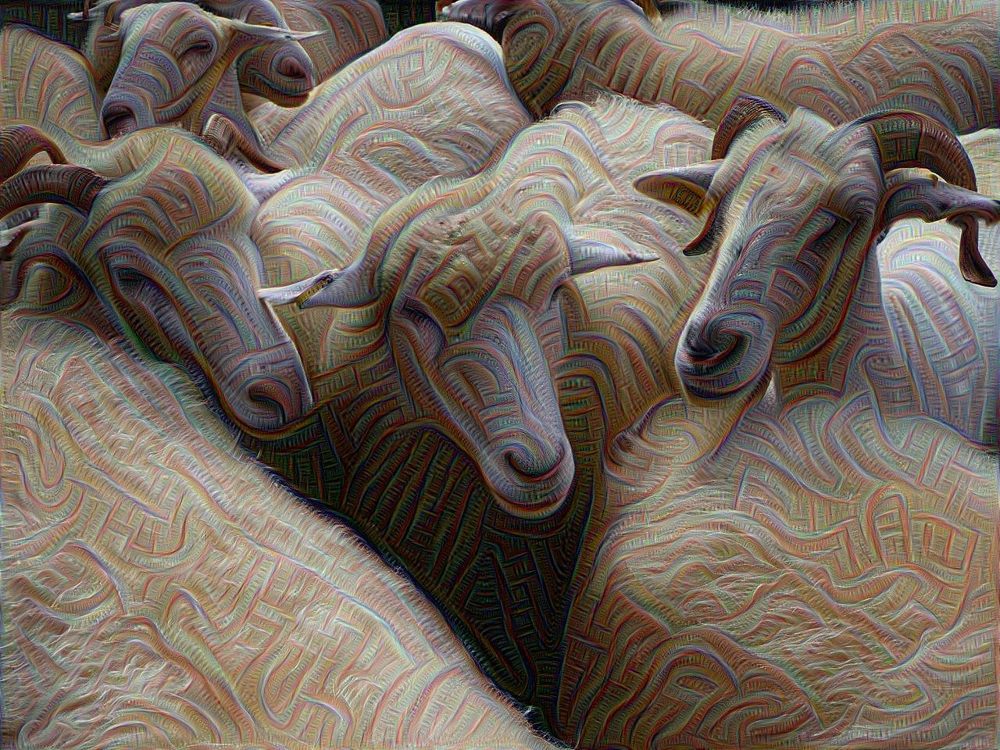

A Look At Deep Dream of Electric Sheep (2015)
Cass Python, 2018-10-12DeepDream is the name of a computer vision program that was created by Google's Alexander Mordvintsev, an engineer at the American company. The program uses a convolutional neural network to find, and enhance patterns in images via algorithmic pareidolia, thus creating a dream-like hallucinogenic appearance in the deliberately over-processed images out of an old image.
{kind=link}
There is a new type of question that is on the minds of so many people working on AI computers; and that is is AI able to think, feel, and act on its own, as if it were a human? If so, then a second question should come up in relation to AI such as DeepDream; if an AI is indeed able to act as if it were a human being, does that mean that images such as Deep Dream of Electric Sheep are works of art?
Or does the act of thinking about this idea not only trivialise artwork made by the greats, but also devalue us a humans?

It is almost certain that in the very near future, this issue will likely effect not only the art world, but the world of what is right and wrong.